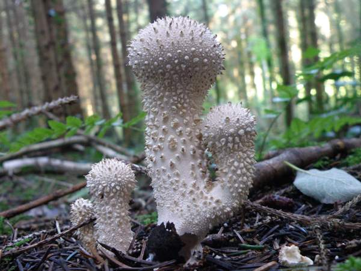
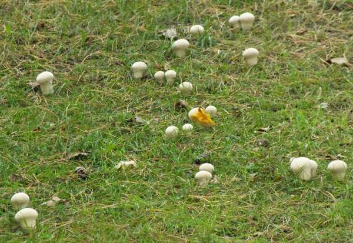
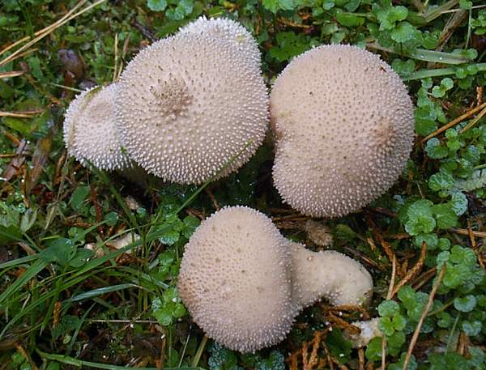
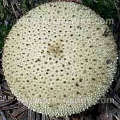
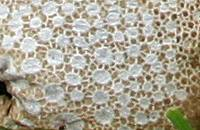
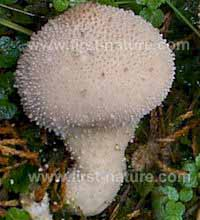
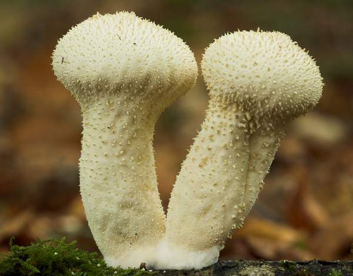
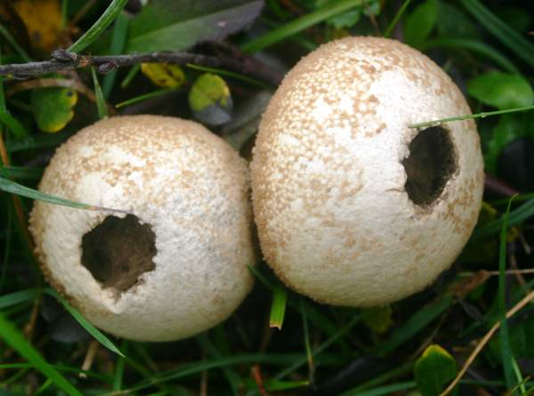

Common Puffball
Lycoperdon perlatum, the Common Puffball, is an edible fungus. Only young specimens should be collected, as once the spore mass begins turning yellow the fungi are unsuitable for eating.
Although found most often in woodlands of all types, the Common Puffball can also occur in grassland. Only occasionally do singletons appear; more often these puffballs are gregarious, with group sizes of between three and ten being most common. At maturity, a small hole opens at the top of the fruit body. When the mature puffball is compressed, either by being hit by raindrops or by a passing animal, a smoke-like cloud of spores is ejected. At maturity, a small hole opens at the top of the fruitbody. When the mature puffball is compressed, either by being hit by raindrops or by a passing animal, a smoke-like cloud of spores is ejected.
There are plenty of fun names to go around for Lycoperdon Perlatum. For the purpose of this article, we’ll refer to it as the Common Puffball. However, you might also hear it called the Gem-Studded Puffball, Warted Puffball, or even the Devil’s Snuff-Box. This puffball fungus falls into the Agaricaceae family.
As its name suggests, the Common Puffball is the easiest type of puffball to find around North America. This type of mushroom has spines coming out of it. They are firm and cone-shaped. As a whole, these mushrooms are pear-shaped and are usually around the size of a golf ball.
Common Puffballs like to grow in fields, alongside roads or trails, and in grassy clearings in the woods. Make sure to collect only the young ones because they become less edible once they mature. With age, Common Puffballs can develop a greenish or yellowish color on the inside that is not good for eating. The interior of a Common Puffball also becomes powdery with age. Meanwhile, the young ones have white and firm flesh.
There is a way to tell if a Common Puffball is mature or not without having to cut into it. A mature Common Puffball eventually develops an opening in its top so that it can release its spores. You’ll want to steer clear of Common Puffballs that are at this stage because their flesh has likely already become darker and powdery.
Before you begin cooking Common Puffballs, make sure to slice off the bottom end and check for signs of bug damage. Again, check to make sure that the flesh of the mushroom is white and firm. Once the mushrooms have been cleaned and inspected, you’re ready to start cooking.
Distribution
Widespread and common in Britain and Ireland, the Common Puffball usually fruitsin small groups or lines in grassland and woodland habitats. Lycoperdon perlatum is a worldwide fungus. This puffball is also very common and widespread throughout mainland Europe and Asia as well as Africa, Australia, and South and Central America.
Taxonomic history
This edible fungus was described by Christiaan Hendrik Persoon in 1796, when he named it Lycoperdon perlatum - still its accepted scientific name today. Even so, Lycoperdon perlatum has acquired a few synonyms over the past couple of centuries; they include Lycoperdon gemmatum Batsch, Lycoperdon perlatum var. perlatum Pers., Lycoperdon gemmatum var. perlatum (Pers.) Fr., Lycoperdon bonordenii Massee, and Lycoperdon perlatum var. bonordenii (Massee) Perdeck.
Etymology
When this gastromycete fungus was first described in scientific literature, by Christian Hendrik Persoon in 1796, it was given the specific epithet perlatum, which simply means 'widespread'; it might equally have justified the alternative 'vulgaris', because it is one of the commonest of fungi, particularly in woodland habitats. (The pearly pimples on the surface of fresh Common Puffballs are sometimes cited as a reason for the specific name.)
The genus name Lycoperdon literally means 'wolf's flatulence' and begs the question who got close enough to a wolf to become an expert on the matter. For most of us, surely such an odour cannot be considered a particularly helpful diagnostic feature for identifying the Common Puffball, Lycoperdon perlatum.
Identification guide
 Fruitbody
Typically pear shaped and 3 to 6cm across; 4 to 9cm tall. A surface covered in tiny pearl-like attachments distinguishes the Common Puffball from its many similar relatives. (At least 13 Lycoperdon species occur in the UK.) The pyramidal warts or 'pearls' are of different sizes, initially cream and then turning ochre before falling off to leave an olive-brown surface marked with faint scars where the warts used to be.
The dark area at the apex is where a pore hole develops, through which the spores are released.
 Common it may be, but Lycoperdon perlatum is uncommonly beautiful in old age. The outer-peridial spines fall away to leave an exquisitely intricate ochre-and-white net pattern on the surface of the inner peridium.
The stem of a Common Puffball is more or less an inverted cone, often somewhat distorted, and contains a small amount of spongy, infertile material.
Odor / Taste : Not distinctive.
Habitat: Common puffballs are saprotrophic and occur in all kinds of woodland, where they grow on the ground in leaf litter; also, less commonly, in permanent pasture and on sheep-cropped stable sand dunes. More often found in small groups rather than as singletons, the common puffball can occasionally branch like a desert cactus, but most are simple pear-shaped fruitbodies like those shown here.
Season: Seems to be anytime after rain.
Culinary notes
Lycoperdon perlatum is not one of the 'Magnificent Seven' edible fungi featured in chapter 10 of Fascinated by Fungi, but this is a popular edible mushroom and can make a very good meal if prepared and cooked properly. Here are a couple of tips. The first important step is to remove the tough outer skin - a fiddly job perhaps best done with a sharp knife. The second point is all to do with quality: use only fresh young fruitbodies which, when cut in half along the vertical axis, are white all through. Discard any that have begun turning yellow, olive or brown, as this indicates that the spores are maturing and the flavour will be seriously marred if you include them in your dish.
Probably the simplest meal that you can make with puffballs is a mushroom omelet; they can also be fried or used to make soups.
Toxic imposters
A note of caution for newcomers to fungal foraging: there are ball-shaped fungi known as earthballs, and some of them can look quite similar to Common Puffballs; however, their spore-bearing inner material starts off very pale grey and gradually becomes brown or black as the spores mature. Earthballs are inedible and some of them can cause serious poisoning. The most common of these, found on woodland tracks (and sometimes along with common puffballs), is Scleroderma citrinum, the Common Earthball. The differences in features between puffballs and earthballs are quite obvious once you know what to look for, but it is important to learn how to distinguish these two groups if you plan on gathering edible puffballs for the pot.
Above: These Common Puffballs have matured and most of the spore mass has been distributed.
There are also some poisonous gilled mushrooms which, when young, could be mistaken for Lycoperdon perlatum, the Common Puffball. Amanita muscaria, the Fly Agaric, first appears as a white-warted round button - the red cap skin does not show through until the cap has expanded somewhat - and at that stage it could quite easily be mistaken for a Common Puffball. Even more seriously, the infamous Deathcap, Amanita phalloides, starts off as a rounded button mushroom, sometimes pure white or with just the faintest hint of olive. I mention this simply to emphasise how important it is not merely to learn how to identify a range of the finest edible mushrooms but, equally importantly, to become familiar with the identifying characteristics of the poisonous fungi with which they could be confused. For more help with this important safety matter see Fascinated by Fungi; however, some introductory information on edible fungi with toxic imposters online here...
For a very easy to recognise edible puffball that cannot be mistaken for any other mushroom, see Calvatia gigantea, the Giant Puffball. Unfortunately it's not every day that you stumble across Giant Puffballs, as they are not only uncommon but also very localised in their distribution. If you find a good spot for these mighty meaty meal sources, make a note of it because Giant Puffballs, like Common Puffballs, usually reappear in the same places for many years.